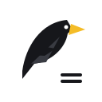

CROW SCIENCE LAB.
수식Chat
to HWPX/PDF
AI Chat을 편집 가능한 Hwp와 Pdf로
현재 페이지 확인 중…
내 PC에서 처리
PDF
인쇄 · 공유
현재 답변
전체 대화
선택 영역
HWPX
한글에서 편집
현재 답변
전체 대화
선택 영역
현재 메모
PDF
HWPX
웹 대화 페이지에서 사용하세요.
출력 설정
포함 항목 · 용지
포함
제목
날짜
질문
답변
PDF 용지
A4 세로
A4 가로
PDF 여백
기본
좁게
긴 코드 줄바꿈
수식 읽기
자동
LaTeX 원문 우선
MathML 구조 우선
도우미 연결 확인
설치 · 저장 폴더